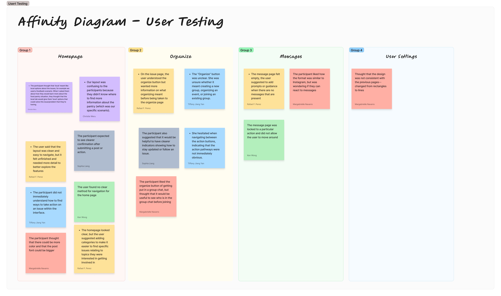
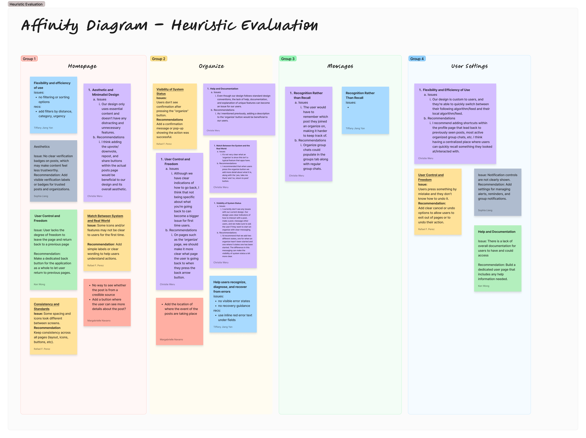

Throughout the quarter, our team conducted user research and usability testing on our prototype. Initially, we started out by asking our participants how they remain in-the-know about certain topics in their community. From there, we would synthesize our findings on FigJam and discuss what we learned and what needed to be addressed. Insights from our affinity diagram directly informed our design decisions, allowing us to identify key pain points such as unclear navigation and confusion around certain features.
After that, we were able to prototype our design and conduct usability testing sessions with the people that we had previously interviewed. Their feedback, along with our heuristic evaluation, is what guided the iterations that led to the final prototype design we have today.
Evaluation:
We evaluated our early ideas through both user testing and heuristic evaluation. These findings helped us identify pain points in the prototype and guided the revisions we made in the final design.
User Testing Findings
After testing our initial design ideas and early prototype, we found one of the biggest issues to be with our ‘organize’ feature. Several of our participants found that it was too confusing, or it didn’t immediately catch their attention.
“She hesitated when navigating between the action buttons, indicating that the action pathways were not immediately obvious.” — Participant feedback
We also addressed other issues by making our new prototype more clickable and accessible. Many participants shared their frustration when trying to click on certain elements but were not receiving any feedback, so that is something we improved in our updated design.
Heuristic Evaluation Findings
In addition to user testing, our heuristic evaluation revealed issues with visibility of system status and user control. For example, users were not receiving confirmation after completing actions, and navigation lacked clear feedback.
These findings supported what we observed during usability testing and helped guide additional improvements, especially around confirmation states, clearer pathways, and more intuitive interaction cues throughout the interface.
Affinity Diagrams:
Affinity Diagram: User Testing
This affinity diagram organizes the main findings from our user testing sessions. It highlights recurring feedback related to the homepage, organize feature, messages, and user settings.

User testing affinity diagram
Affinity Diagram: Heuristic Evaluation
This affinity diagram summarizes the usability issues identified through our heuristic evaluation, including system visibility, user control, recognition, consistency, and help/documentation.

Heuristic evaluation affinity diagram
Final Prototype:
Interactive Final Prototype
Our final prototype is a high-fidelity, clickable Figma design that reflects the improvements made from both user testing and heuristic evaluation. We focused on making the interface more intuitive by improving navigation, increasing feedback when users interact with elements, and refining the ‘organize’ feature so it is clearer and easier to use.